Three lines in observations.txt. Two fixed, one fixed in part.
Captures are raw mGBA frames taken by tools/playtest/playtest.py
against the rebuilt ROM; close-ups are nearest-neighbour upscales of the same
frames. Full reasoning in docs/port/decisions.md, section D110.
CrystalDust's src/oak_speech_crystal.c drew this border
itself, from a hand-written tilemap indexing a twenty-tile message box. D106
replaced message_box.png with expansion's fourteen-tile sheet, so the
tilemap pointed at art that no longer matched. The clear path in the same file
already used expansion's ClearDialogWindowAndFrame — that
asymmetry was the tell. NewGameOakSpeech_ShowDialogueWindow now calls
DrawDialogFrameWithCustomTileAndPalette, and the window widens 26
→ 27 to match the field box.
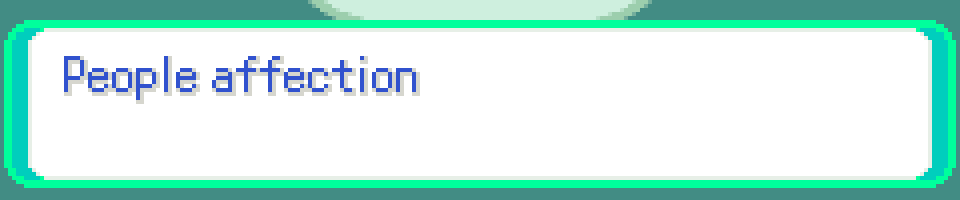
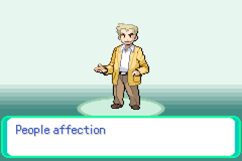
The observation's “during battle” qualifier is not reproduced. The
battle message box is gBattleTextboxTiles/Tilemap/Palette,
a prebuilt asset D106 never touched; the battle menu windows follow FRAME TYPE via
LoadUserWindowBorderGfx. The line stays in observations.txt
for the tester to confirm or drop.
Twelve object-event palettes sat behind #if IS_FRLG
in sObjectEventSpritePalettes[] while the graphics infos that name
them are compiled in unconditionally — D97 ungated the pics and the graphics
infos but not the palette table.
FindObjectEventPaletteIndexByTag therefore returned 0xFF,
which truncates to 15 in the four-bit oam.paletteNum
field, and OBJ palette 15 still held the boot intro's raindrop ramp
(graphics/intro/scene_1/drops.pal).
| Missing tag | Graphics infos affected |
|---|---|
OBJ_EVENT_PAL_TAG_NPC_WHITE | 47 |
OBJ_EVENT_PAL_TAG_NPC_BLUE | 38 |
OBJ_EVENT_PAL_TAG_NPC_PINK | 26 |
OBJ_EVENT_PAL_TAG_NPC_GREEN | 17 |
OBJ_EVENT_PAL_TAG_PLAYER_RED | 10 |
OBJ_EVENT_PAL_TAG_PLAYER_GREEN | 5 |
SS_ANNE, SEAGALLOP, METEORITE | 1 each |
Cherrygrove mart, same script, same frame:
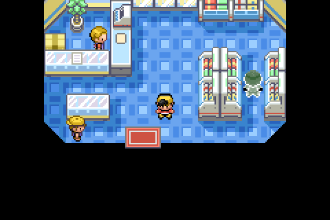
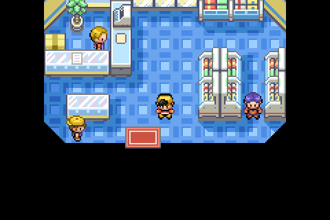
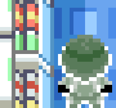
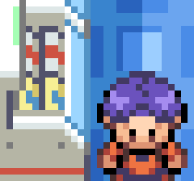
npc_white.palsSpritePaletteTags in Elm's lab, before: 1200 1170 1100 1172 1106 FFFF x11
OBJ palette 15, before: 0000 x6 04E1 1124 1D87 2DEB 3A2E 4691 56F5 6338 6F9B 7FFF
== build/assets/graphics/intro/scene_1/drops.pal.gbapal
LoadObjectEventPalette(0x112C) -> FindObjectEventPaletteIndexByTag -> 0xFF
0xFF stored in a 4-bit bitfield -> 15
sSpritePaletteTags on Route 29, after: 1200 1170 1100 1106 112C FFFF x11
The item handed over was already correct. The tree art was not,
and could not be: there is one fruit metatile
(METATILE_General_FruitTreeTop, 0x22D) shared by every tree in the
game, drawn from palette 0 indices 9/10/11 of the General primary tileset —
one ramp, shared by every tree on screen at once. Routes 37 and 42 each show three
trees of three different colours, so no single ramp can match them.
Taken: repaint the ramp from red to a neutral apricorn amber, so the tree reads as “an apricorn tree” and only the item carries the colour.
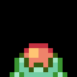
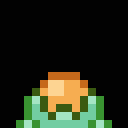
In game, Route 29, at night (the capture script's clock):
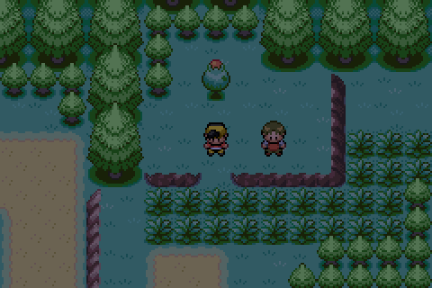
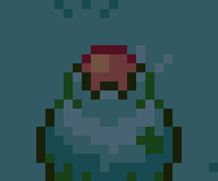
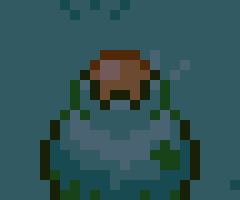
Making the fruit itself match per tree is a feature, not a defect fix, and needs
either per-map colour unification plus a runtime palette patch that survives
TimeMixPalettes, or the unused
OBJ_EVENT_GFX_APRICORN_TREE sprite placed on all thirty maps with
seven OBJ palettes. Both are written up in D110 for the tester to choose.